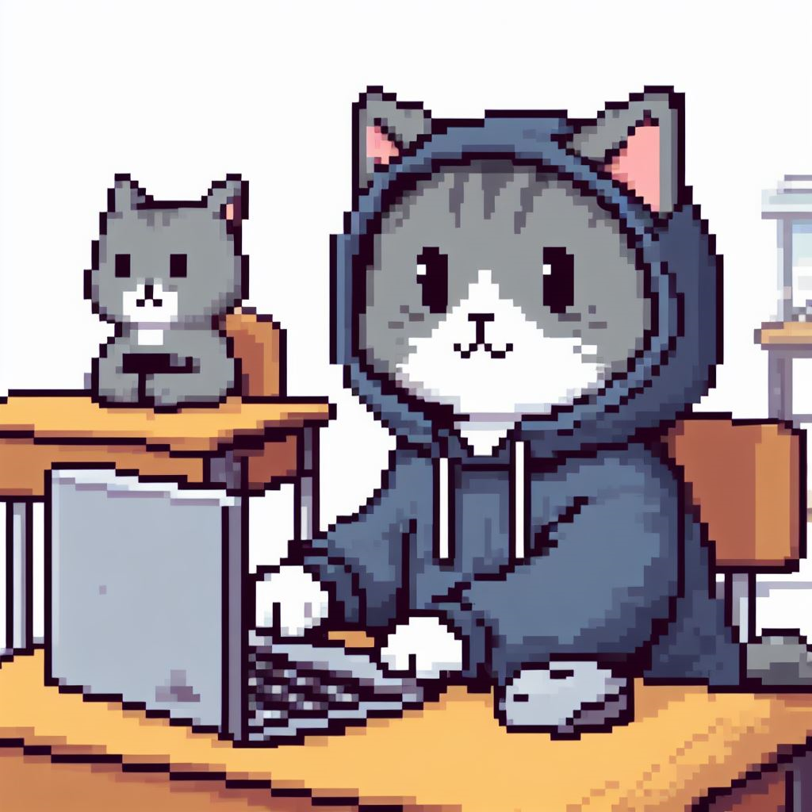

História
Nico é um jovem gato que está a poucos passos de finalizar o ensino médio, mas se sente indeciso soe o rumo que gostaria de seguir depois que sair da escola. Por isso, decide pedir ajuda ao seu professor Junin, que dará conselhos que mais tarde ajudarão Nico a tomar importantes decisões em seu caminho, nas quais ele passa a parar de olhar para o mundo das telinhas e começa a se deparar com o mundo real. Ele encontrará alguns impecilhos, como seus colegas Sivirino e Otto, que tentarão sabotar suas escolhas. Para isso, ele terá que refletir soe suas amizades e deixar algumas para trás. O que fazer diante das más influências? Este é apenas o começo de uma importante aventura, na qual um gatinho inseguro torna-se mais confiante soe si e o mundo em que vive - e que ainda tem suas dificuldades, mas tem muita autonomia e autoconhecimento que facilitam a sua incrível jornada.
Capítulo I: Autoconhecimento
Nico está se formando na escola, porém não sabe em qual carreira seguir, ele se sente inseguro sobre suas capacidades técnicas e de liderança, toda essa pressão faz com que ele acabe ficando preguiçoso e procrastine o dia inteiro. Para então descobrir o que gostaria de trabalhar, ele conversa com seu orientador Junin, que lhe mostra algumas possibilidades de carreiras a seguir. Após decidir qual área do conhecimento gostaria de seguir, nosso jovem então começa o seu último ano de ensino médio, porém, alguns de seus amigos se sentem incomodados com seu desenvolvimento. Ao longo do tempo, juntamente aos ensinamentos de seu orientador, o gato guerreiro começa a descobrir seus talentos e habilidades, e com isso seus “amigos”” (Sivirino, uma serpente e Otto, uma onça) passam a tentar sabotá-lo utilizando de contratos que atrasariam seu desenvolvimento. Após superar todas as armadilhas e enganações, Nick se forma no ensino Médio, até que em uma última tentativa de impedi-lo, Otto e Sivirino vão confrontá-lo diretamente. Após falharem miseravelmente, Nico consegue seu primeiro emprego.
Capítulo II: Emancipação
Nosso protagonista recebe uma proposta de emprego em outra cidade para trabalhar na prefeitura. Após algumas semanas em seu trabalho, o pequeno felino percebe que suas condições de trabalho não são lá as melhores. E decide investigar o que está ocorrendo por detrás dos lençóis. Nisso ele descobre que a prefeita, Roberta (uma raposa), não cumpre com as propostas que fez para ser eleita, e não cumpre com o direito dos trabalhadores, que trabalham para manter a imagem da prefeita, mas não conseguem se desvincular daquele emprego. Após libertar aquelas pessoas e a si próprio, Roberta fica furiosa e manda pessoas o prenderem. Nisso, Nico foge desesperadamente até enfim sair da cidade. Após isso, agora ele está buscando um emprego melhor, com condições mais humanas.
.png)
Capítulo III: Autonomia
.png)
Após um tempo, Nico passa a trabalhar em uma multinacional. Ele foi se desenvolvendo como profissional e subindo de cargos na empresa. Nico recebe uma proposta do seu chefe para substituir o gerente de sua equipe, já que ele não estava conseguindo se organizar e alcançar os objetivos exigidos pela empresa. O gerente antigo, por ter 5 filhos para sustentar, começa a sentir seu cargo ameaçado e começa a pensar formas de continuar no emprego. Para isso ele tenta de todas as formas mostrar ser superior, mas falha ao não conseguir gerenciar suas próprias tarefas, decisões e obrigações. Nisso os dois acabam se enfrentando. Porém, Nico mais uma vez se mostra mais preparado, e acaba o superando. Após toda a sua jornada, Nico conseguiu desenvolver suas habilidades e teve sucesso em sua carreira